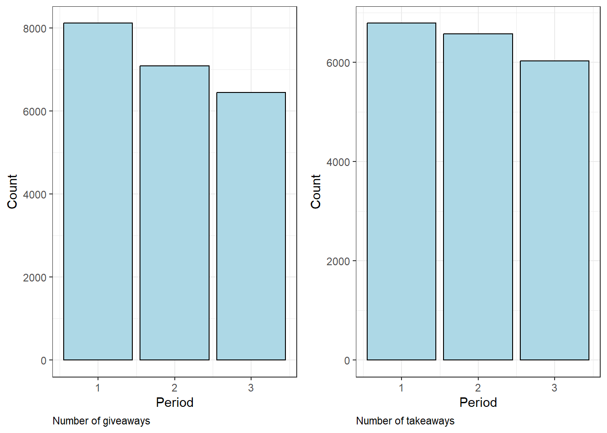
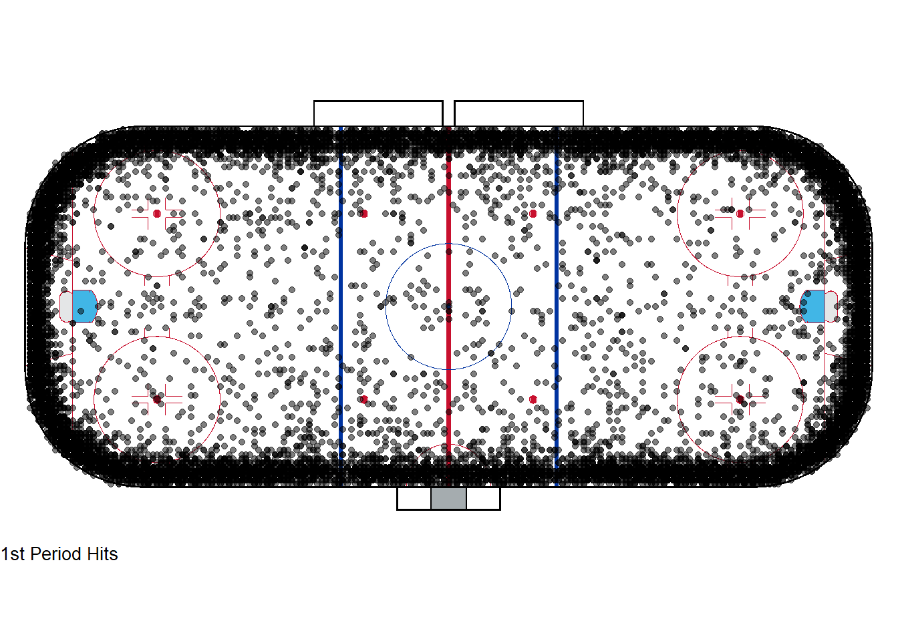

library(dplyr)
library(hockeyR)
library(ggplot2)
library(knitr)
library(cowplot)
library(sportyR)
pbp_24 <- load_pbp("2023-2024")Analyzing NHL play-by-play data from the 2023-2024 season
Abstract
This project will explore the long change in the second period using play-by-play data from the 2023-2024 season.
Loading the Necessary Packages and Data
Introduction
This project will explore the long change by analyzing play-by-play data from the 2023-2024 season. Specifically looking at how different play-by-play statistics compare from period one to period three in order to see if there is any major statistical difference as a result of the long change.
What is the long change?
In the NHL teams switch the side of the rink they are defending each period and in the first and third period you defend on the same side that your bench is on but in the second you defend the opposite side your bench is on. This means it is easier to make a line change in the first and third period and harder to make a line change in the second period. The harder change in the second period is known as the long change.
Looking at the Number of Stoppages
Code
pbp_24_stop <- pbp_24 %>%
filter(event == "stoppage" & period != 4 & period != 5)
ggplot(pbp_24_stop, aes(x = period)) +
geom_bar(fill = "lightblue", color = "black") +
theme_bw() +
labs(x = "Period",
y = "Count",
caption = "Number of stoppages in each regulation period over the entire season") +
theme(plot.caption = element_text(hjust = 0))
Code
pbp_24_stop %>%
group_by(period) %>%
summarize(stoppages = n()) %>%
kable()| period | stoppages |
|---|---|
| 1 | 20317 |
| 2 | 20835 |
| 3 | 20356 |
Exploring Icings and Covers
Code
# specifically icings
pbp_24_icing <- pbp_24 %>%
filter(description == "Stoppage in play (icing)" & period != 4 & period != 5)
p1 <- ggplot(pbp_24_icing, aes(x = period)) +
geom_bar(fill = "lightblue", color = "black") +
theme_bw() +
labs(x = "Period",
y = "Count",
caption = "Number of icings") +
theme(plot.caption = element_text(hjust = 0))
pbp_24_icing %>%
group_by(period) %>%
summarize(icings = n()) %>%
kable()| period | icings |
|---|---|
| 1 | 3716 |
| 2 | 3778 |
| 3 | 4186 |
Code
# specifically goalie covering the puck
pbp_24_cover <- pbp_24 %>%
filter((description == "Stoppage in play (puck-frozen)" | description == "Stoppage in play (goalie-stopped-after-sog)")& period != 4 & period != 5)
p2 <- ggplot(pbp_24_cover, aes(x = period)) +
geom_bar(fill = "lightblue", color = "black") +
theme_bw() +
labs(x = "Period",
y = "Count",
caption = "Number of times the puck was covered") +
theme(plot.caption = element_text(hjust = 0))
plot_grid(p1,p2)
Code
pbp_24_cover %>%
group_by(period) %>%
summarize(covers = n()) %>%
kable()| period | covers |
|---|---|
| 1 | 6372 |
| 2 | 6720 |
| 3 | 6190 |
Overall there are more stoppages in the second period than there are in the first and third. Looking specifically at icings there is the most in the third and the least in the second. The second period had the most amount of puck covers out of any period.
Note: The third period is when teams pull their goalie and so the amount of icings and times the puck was covered could be skewed a little by this. However, overall the second period still has the most amount of stoppages and the second period has more than the first in both icings and puck covers.
Looking at Penalties
Code
pbp_24_penalty <- pbp_24 %>%
filter(event == "penalty" & period != 4 & period != 5)
pbp_24_penalty_1 <- pbp_24_penalty %>%
filter(period == 1)
pbp_24_penalty_2 <- pbp_24_penalty %>%
filter(period == 2)
pbp_24_penalty_3 <- pbp_24_penalty %>%
filter(period == 3)
nhl_rink <- geom_hockey('nhl')
nhl_rink +
geom_point(data = pbp_24_penalty_1, aes(x = x_fixed, y = y_fixed), alpha = .5) +
labs(caption = "1st Period Penalties") +
theme(plot.caption = element_text(hjust = 0, size = 10))
Code
nhl_rink +
geom_point(data = pbp_24_penalty_2, aes(x = x_fixed, y = y_fixed), alpha = .5) +
labs(caption = "2nd Period Penalties") +
theme(plot.caption = element_text(hjust = 0, size = 10))
Code
nhl_rink +
geom_point(data = pbp_24_penalty_3, aes(x = x_fixed, y = y_fixed), alpha = .5) +
labs(caption = "3rd Period Penalties") +
theme(plot.caption = element_text(hjust = 0, size = 10))
Code
pbp_24_penalty %>%
group_by(period) %>%
summarize(penalties = n()) %>%
kable()| period | penalties |
|---|---|
| 1 | 3253 |
| 2 | 3994 |
| 3 | 3380 |
Over the course of the 2023-2024 season there were more penalties in the second period than any other. Interestingly, in the second period there seems to be more penalties in front of the nets and in front of the benches.
Giveaways and takeaways
Code
pbp_24_away <- pbp_24 %>%
filter((event == "giveaway" | event =="takeaway") & period != 4 & period != 5)
pbp_24_giveaway <- pbp_24_away %>%
filter(event == "giveaway")
p3 <- ggplot(pbp_24_giveaway, aes(x = period)) +
geom_bar(fill = "lightblue", color = "black") +
theme_bw() +
labs(x = "Period",
y = "Count",
caption = "Number of giveaways") +
theme(plot.caption = element_text(hjust = 0))
pbp_24_takeaway <- pbp_24_away %>%
filter(event == "takeaway")
p4 <- ggplot(pbp_24_takeaway, aes(x = period)) +
geom_bar(fill = "lightblue", color = "black") +
theme_bw() +
labs(x = "Period",
y = "Count",
caption = "Number of takeaways") +
theme(plot.caption = element_text(hjust = 0))
plot_grid(p3,p4)
Code
pbp_24_away %>%
group_by(period) %>%
summarize(total = n()) %>%
kable()| period | total |
|---|---|
| 1 | 14903 |
| 2 | 13657 |
| 3 | 12470 |
The total amount of giveaways and takeaways decrease each period, which shows an overall game trend but doesn’t seem to be affected by the second period long change.
Hits
Code
pbp_24_hit <- pbp_24 %>%
filter(event == "hit" & period != 4 & period != 5)
pbp_24_hit_1 <- pbp_24_hit %>%
filter(period == 1)
pbp_24_hit_2 <- pbp_24_hit %>%
filter(period == 2)
pbp_24_hit_3 <- pbp_24_hit %>%
filter(period == 3)
nhl_rink +
geom_point(data = pbp_24_hit_1, aes(x = x_fixed, y = y_fixed), alpha = .5) +
labs(caption = "1st Period Hits") +
theme(plot.caption = element_text(hjust = 0, size = 10))
Code
nhl_rink +
geom_point(data = pbp_24_hit_2, aes(x = x_fixed, y = y_fixed), alpha = .5) +
labs(caption = "2nd Period Hits") +
theme(plot.caption = element_text(hjust = 0, size = 10))
Code
nhl_rink +
geom_point(data = pbp_24_hit_3, aes(x = x_fixed, y = y_fixed), alpha = .5) +
labs(caption = "3rd Period Hits") +
theme(plot.caption = element_text(hjust = 0, size = 10))
Code
pbp_24_hit %>%
group_by(period) %>%
summarize(Hits = n()) %>%
kable()| period | Hits |
|---|---|
| 1 | 23925 |
| 2 | 20376 |
| 3 | 17574 |
Much like giveaways and takeaways, the amount of hits decrease each period and reveal an overall game trend, but don’t seem to be affected by the second period long change. Hits are also being thrown in the same areas across all periods.
Shot distance
Code
pbp_24_distance <- pbp_24 %>%
filter(!is.na(shot_distance) & period != 4 & period != 5)
ggplot(pbp_24_distance, aes(x = factor(period), y = shot_distance, fill = factor(period))) +
geom_boxplot() +
theme_bw() +
labs(fill = "Period",
x = "Period",
y = "Shot Distance")
Code
pbp_24_distance %>%
group_by(period) %>%
summarize(avg_shot_dist = mean(shot_distance)) %>%
kable()| period | avg_shot_dist |
|---|---|
| 1 | 35.65315 |
| 2 | 34.72903 |
| 3 | 36.69432 |
The average shot is the lowest in the second period, but the average shot distance is very similar across all periods and this could just be due to the randomness of the game.
Conclusion
The long change in the second period seems to affect the amount of stoppages and the amount of penalties taken. Most of the time stoppages allow teams to change without risk so it would make sense that teams want more stoppages to avoid the long change in the second. Taking more penalties could indicate that players are getting more fatigued because of the more difficult change in the second. However, some other plays that could be affected by how tired a player is seem to be more closely related to overall game fatigue and not the harder change in the second period.